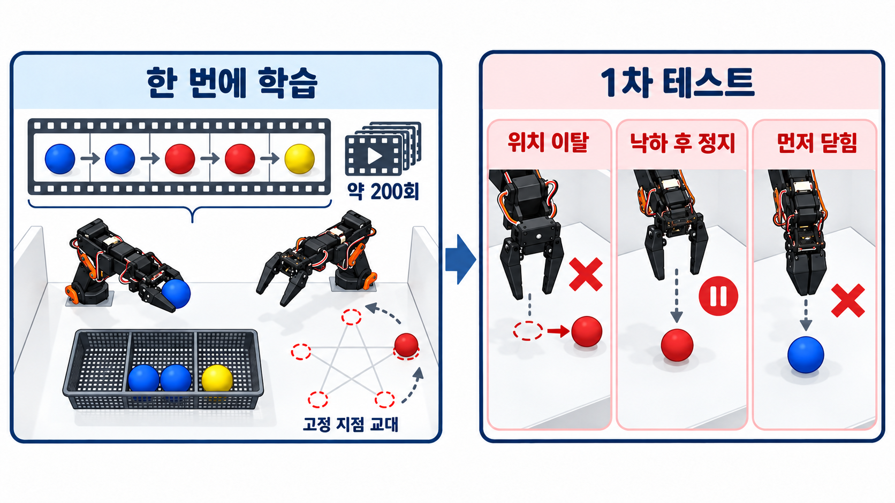
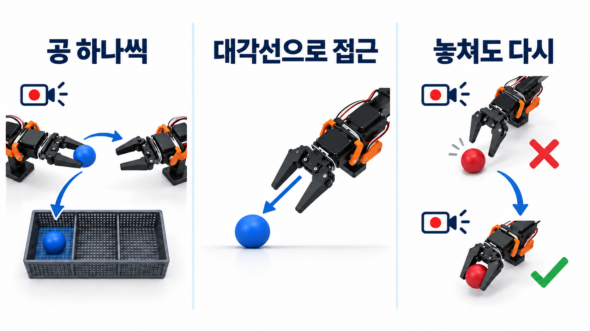

한성대학교와 로보시지가 주최한 제1회 Physical AI 해커톤에 4인 팀으로 참가했습니다. SO-101 로봇팔 두 대와 2D 카메라를 사용해 색상 공을 집어 수납함에 분류하는 미션에 도전했습니다.
도전 과제: 두 팔이 공을 건네 색상별로 분류하기
Pick & Place한쪽 팔로 바닥의 공 집기
Transfer반대쪽 팔의 그리퍼로 전달
Classification색상별 수납함에 넣기
모델 선택
제한된 시간 안에 구현과 테스트를 마치기 위해 LeRobot에서 지원하는 ACT를 사용했습니다. ACT는 카메라 영상과 관절 상태를 바탕으로 여러 동작을 한 번에 예측해 집기·전달·분류 같은 연속 동작을 제어합니다.
사람이 리더 로봇팔을 움직이며 카메라 영상, 관절 상태와 동작을 에피소드로 기록했습니다.
1차 시도: 다섯 개의 공을 한 번에 학습시키기
수납함 오른쪽에 별 모양의 꼭짓점을 따라 공을 놓을 지점을 정하고, 이 고정 지점들을 번갈아 사용했습니다. 파랑 → 파랑 → 빨강 → 빨강 → 노랑 순서로 다섯 공을 집어 전달하고 분류하는 전체 시퀀스를 한 번에 기록해, 약 200개의 시연 데이터를 수집했습니다.
1차 테스트
테스트에서는 공을 떨어뜨리면 다시 집지 못하고 멈췄고, 공이 학습 때 고정한 위치에서 벗어나면 제대로 집지 못했습니다. 수직으로 접근하는 과정에서는 공에 닿기 전에 집게를 먼저 닫는 현상도 발생했습니다.

2차 시도: 공 하나씩 학습하고 실패 복구도 기록하기
시연을 공 하나를 집어 전달하고, 같은 색 수납함에 넣는 동작으로 나눴습니다. 긴 순서를 한꺼번에 익히기보다 짧은 동작을 반복해서 학습하도록 바꿨습니다.
공에 수직으로 내려가는 대신 대각선으로 접근해 집는 동작을 기록했습니다. 일부러 공을 놓친 뒤 다시 집는 동작을 넣어, 실패한 상태에서 작업을 이어가는 과정도 학습 데이터에 포함했습니다.

심사 결과
공 5개를 각각 200회씩 시연해 약 1,000개의 학습 데이터를 수집했습니다. 오전 9시 마감에 맞춰 15,000 step까지 학습한 모델로 심사를 진행했습니다. 공개 최종 모델의 학습 설정은 50,000 step으로, 심사에 사용한 모델과 구분됩니다.
공 3개는 집기·전달·색상별 분류까지 연속으로 성공했습니다. 네 번째 공을 처리하던 중 오른팔이 수납함을 넘어뜨려 시연을 중단해 완주하지 못했고, 아쉽게 수상하지는 못했습니다.
회고
ACT로 양팔 동작을 학습했지만, 수납함이 넘어지는 등 상황이 달라졌을 때 작업을 이어가는 데 한계가 있었습니다. 동작 학습과 별개로 작업 진행 상태를 확인하고 다음 행동을 정하는 구조가 필요했습니다.
다시 설계한다면 ACT는 팔 동작을 맡고, 상위 상태 머신은 공의 색상·처리 개수·실패 여부를 관리하도록 나누겠습니다. 이번 경험을 통해 작업을 짧게 나누고 실패 후 복구 동작까지 데이터에 담는 것이 중요하다는 점을 배웠습니다.
함께한 팀
PHYSICAL AI HACKATHON — Bimanual Imitation Learning
Team: 4 membersPeriod: Feb 8–9, 2026
LeRobot · ACT · Imitation Learning · SO-101
Overview
I joined a four-person team at the first Physical AI Hackathon hosted by Hansung University and ROBOSIZE. Using two SO-101 arms and 2D cameras, we trained the robots to pick up colored balls, transfer them between grippers, and sort them into bins.
Challenge: transfer and sort balls with two arms
Pick & PlacePick a ball from the floor with one arm
TransferPass it to the opposite gripper
ClassificationPlace it in the color-matched bin
Model selection
We chose ACT, supported by LeRobot, to finish implementation and testing within the limited event time. ACT predicts a chunk of actions from camera images and joint states, enabling continuous pick, transfer, and sorting motion.
A human moved the leader arms while camera images, joint states, and actions were recorded as episodes.
First attempt: learn all five balls in one sequence
We defined fixed pickup positions at the tips of a star-shaped layout to the right of the basket and alternated between these positions. We recorded about 200 demonstrations, each covering the full sequence of picking, transferring, and sorting five balls in the order blue → blue → red → red → yellow.
First test
During testing, the robot stopped after dropping a ball instead of picking it up again, and struggled to grasp balls placed outside the fixed training positions. During vertical approaches, the gripper also closed before reaching the ball.
Second attempt: learn one ball at a time and record recovery
We split demonstrations into picking up one ball, passing it between arms, and placing it in the matching bin. This let the model learn repeated short actions instead of one long sequence.
We recorded the gripper approaching the ball diagonally rather than descending vertically. We also deliberately missed a ball and picked it up again, adding how to continue after a failed grasp to the training data.
Judging result
We collected about 1,000 training demonstrations, 200 for each of five balls. To meet the 9 a.m. deadline, we used the model trained to 15,000 steps for judging. The published final model configuration specifies 50,000 steps, distinct from the model used for judging.
The robots picked, transferred, and sorted three balls consecutively. While handling the fourth, the right arm knocked over a bin, ending the demonstration before we could complete the full sequence. Unfortunately, we did not win an award.
Reflection
ACT learned the two-arm motions, but the system struggled to continue when conditions changed, such as a bin falling over. It needed a separate mechanism to track progress and choose the next action.
In a redesign, ACT would control arm motion while a high-level state machine managed ball color, the number processed, and failures. The experience showed the importance of splitting tasks into short actions and including recovery demonstrations in the training data.